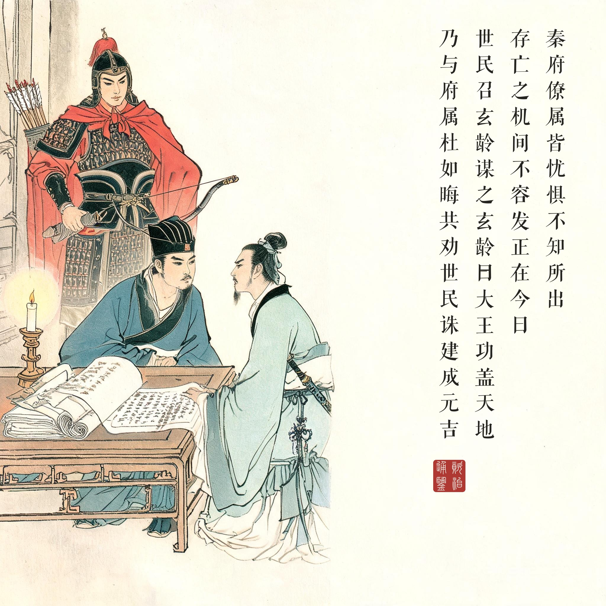
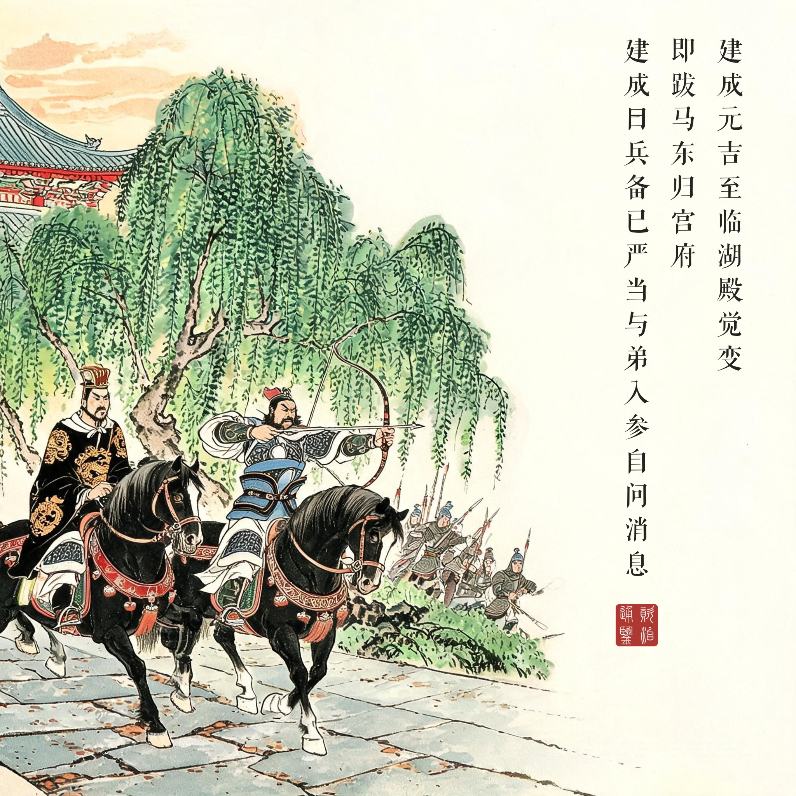
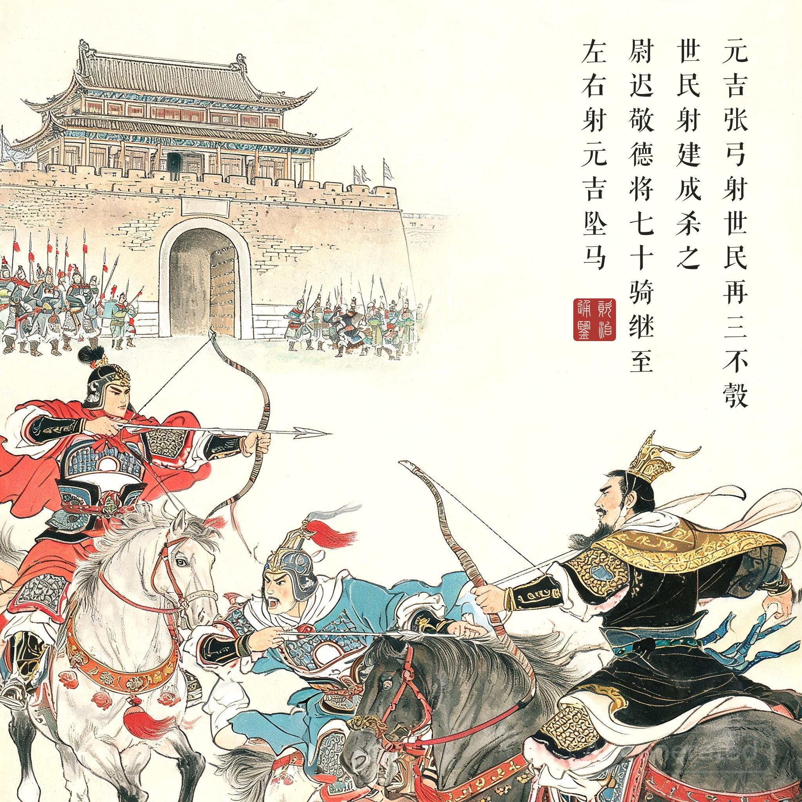
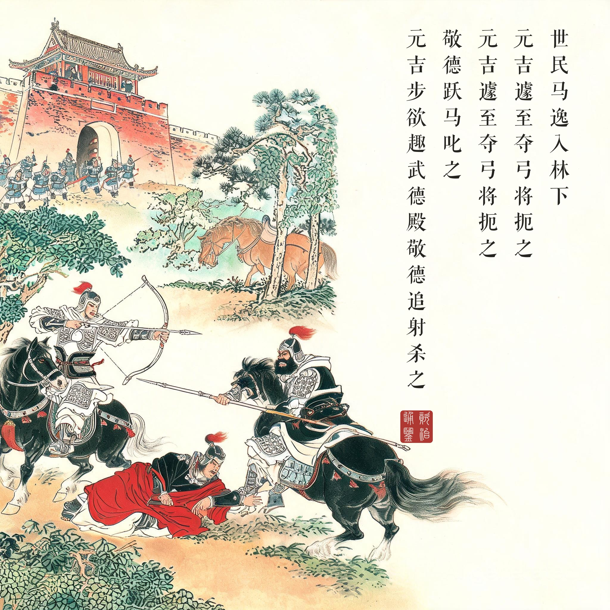
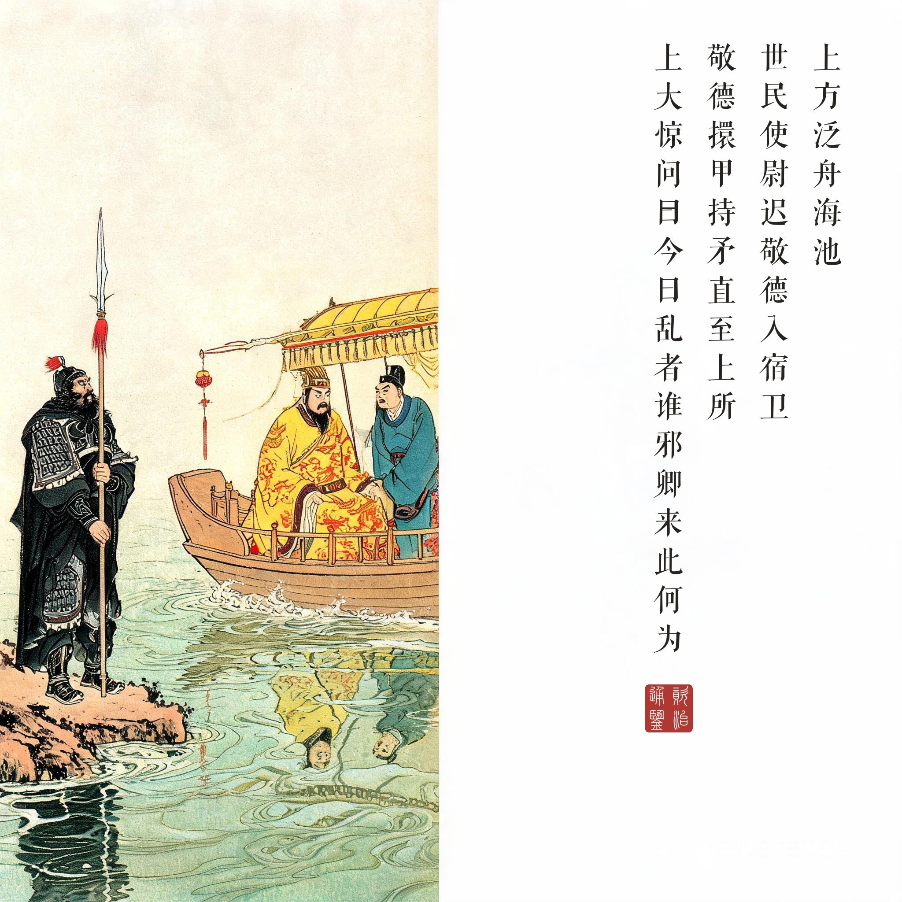

《资治通鉴 · 卷第一百九十一 · 唐纪七》高祖神尧大圣光孝皇帝下之上武德九年（公元 626 年）
（据 daizhigev20《资治通鉴》底本节录）
己未，太白复经天。傅奕密奏：“太白见秦分，秦王当有天下。”上以其状授世民。于是世民密奏建成、元吉淫乱后宫，且曰：“臣于兄弟无丝毫负，今欲杀臣，似为世充、建德报仇。臣今枉死，永违君亲，魂归地下，实耻见诸贼！”上省之，愕然，报曰：“明当鞫问，汝宜早参。”庚申，世民帅长孙无忌等入，伏兵于玄武门。……建成、元吉至临湖殿，觉变，即跋马东归宫府。世民从而呼之，元吉张弓射世民，再三不彀，世民射建成，杀之。尉迟敬德将七十骑继至，左右射元吉坠马。世民马逸入林下，为木枝所絓，坠不能起。元吉遽至，夺弓将扼之，敬德跃马叱之。元吉步欲趣武德殿，敬德追射，杀之。……上方泛舟海池，世民使尉迟敬德入宿卫，敬德擐甲持矛，直至上所。上大惊，问曰：“今日乱者谁邪？卿来此何为？”对曰：“秦王以太子、齐王作乱，举兵诛之，恐惊动陛下，遣臣宿卫。”上谓裴寂等曰：“不图今日乃见此事，当如之何？”……萧瑀、陈叔达曰：“……秦王功盖宇宙，率土归心，陛下若处以元良，委之国务，无复事矣。”上曰：“善！此吾之夙心也。”
己未日，太白星再次白昼经天。太史令傅奕密奏：“太白出现于秦地分野，秦王当有天下。”高祖把奏状交给了李世民。于是李世民密奏建成、元吉淫乱后宫，并且说：“臣对兄弟没有丝毫亏负，如今他们要杀臣，倒像是在替王世充、窦建德报仇。臣如今含冤而死，永远离开君亲，魂归地下，实在耻于见那些贼人！”高祖看了，惊愕，答复说：“明天当审问此事，你应早些进宫。”庚申日清晨，李世民率长孙无忌等人入宫，在玄武门设下伏兵。……建成、元吉行至临湖殿，察觉有变，立即勒马想回东宫。李世民在后面喊他们，元吉张弓射世民，接连三次都拉不满弓，世民一箭射建成，杀了他。尉迟敬德率七十骑相继赶到，左右射元吉坠马。世民的战马受惊冲进树林，被树枝绊住，坠马爬不起来。元吉赶到，夺过弓想掐死世民，敬德跃马大声呵斥。元吉步行想逃往武德殿，敬德追上去一箭射死他。……高祖当时正在海池泛舟，李世民派尉迟敬德入宫宿卫，敬德披甲持矛，直到高祖所在之处。高祖大惊，问：“今天作乱的是谁？你来干什么？”敬德答：“秦王因太子、齐王作乱，举兵诛杀了他们，恐怕惊动陛下，派臣来宿卫。”高祖对裴寂等人说：“想不到今天见到这种事，该怎么办？”……萧瑀、陈叔达说：“……秦王功盖宇宙，天下归心，陛下如果立他为储君，把国事交给他，就没有事了。”高祖说：“好！这也是我的夙愿。”
上午九点前的权力转移。玄武门之变常被简化为一箭，其实是一场严密的军事作业：收买北门屯将（常何）、控制入宫动线、伏兵选点（临湖殿是建成必经的最后一处窄地）、策应的七十骑、还有海池方向那步“宿卫”的先手棋——每个环节都不能失败，失败就是族灭。而《通鉴》写得最细的不是谋略，是身体的失控：元吉“再三不彀”的抖，李世民坠马后差点被弟弟掐死的窘。政变的浪漫叙事在这里被还原成一场狼狈的肉搏——历史是大事，亲历者经历的是最原始的恐惧。
海池上的皇帝。“上方泛舟海池”是《通鉴》全书最冷的一句闲笔。三个儿子在一个门里厮杀，两个当场死了，父亲在几步外的池上划船——他什么都不知道，或者说他不需要知道。等他知道时，全副武装的尉迟敬德已经立在船边：“秦王派臣宿卫。”这句话每个字都对，合起来是最彻底的逼宫。读画看第五幕：舟与甲胄、老人与悍将、水面的波光与铁甲的反光——中国史书里的“忠”，没有比这更锋利的场景。
“此吾之夙心也”。李渊的屈服被写得体面：萧瑀、陈叔达递台阶（“功盖宇宙，率土归心”），他顺台阶而下。两个月后太子易人，八月禅位为太上皇。贞观之治的光辉常让后人跳过这个上午，而司马光不跳——他把“擐甲持矛直至上所”六个字留在纸上，提醒所有读史的人：那一代明君的起点，是父亲在船上的惊愕。